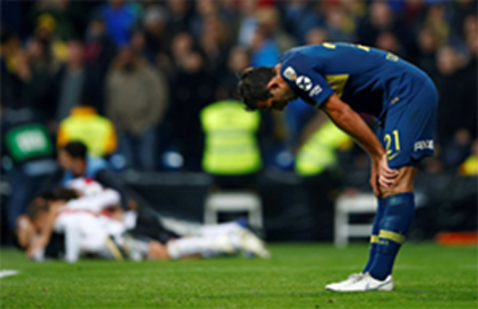

Recientemente, el Club Atlético Boca Juniors (CABJ) perdió contra el Club Atlético Independiente el 19 de Mayo de 2025. Este suceso lo dejó afuera de la Liga Argentina y por ende, no podría participar más en este torneo.
Este partido conmovió a todos los hinchas de este club dejándolos tristes, enojados y ansiosos. Algunos culpan a Riquelme por el hecho de fichar malos jugadores y prescindir a los mejores.
En los últimos días, Boca Juniors viene alternando entre malos partidos y algunas victorias. Muchos hinchas expresaron que el club ya no es como antes desde el ingreso de Riquelme como presidente Xeneize .
"Desde aquel día cuando Boca perdió la final de Libertadores, muchos de nosotros estuvimos decepcionados" expresó un hincha de Boca . Otros hinchas están más decepcionados por los ex jugadores del azul y oro que se retiraron hace menos de 5 años como en el caso de Carlos Tévez, Valentín "Colo" Barco, Guillermo Matías "Pol" Fernández , entre otros.
El día de ayer, 20/5/2025, Boca tuvo justicia debido a las burlas de los hinchas del Club Atlético River Plate . "El partido de River ayer fue algo gracioso al perder contra Platense" , expresó con burlas un hincha de Boca.
Los hinchas de River Plate se burlaron del equipo de Riquelme por su partido perdido contra Independiente que terminó 1-0 el día 19/05/2025 pero al día siguiente sucedió la justicia para Boca, el equipo de Brito perdió el partido contra el Club Atlético Platense terminando 1-1 lo que llevó a los equipos a una tanda de penales que finalizó 2-4 ganando Platense.